Texture set, baking and export
The texture set holds the output maps of a project. This page covers their resolution, the mesh maps that smart masks use, baking a high-poly sculpt, exporting to other tools, and saving projects.
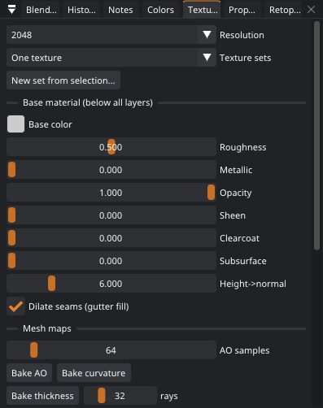
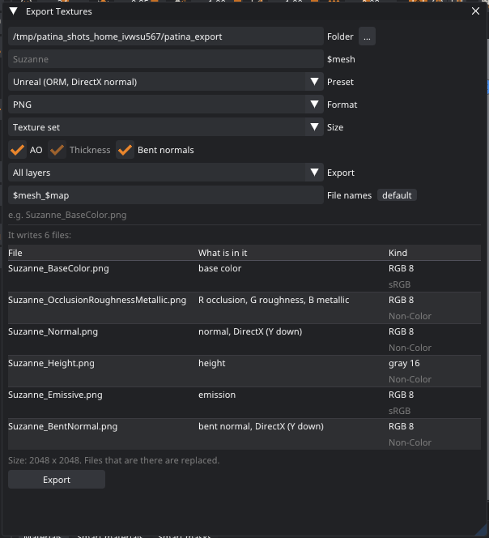
Resolution
Texture Set › Resolution can be 512 to 8192 (2048 by default), per texture set or UDIM tile when the model has several (see Texture sets and UDIM tiles). Changing it resamples every layer, so you can paint at 2K and export at 4K. Higher resolutions use a lot more memory: a fully painted paint layer takes about 85 MB of GPU memory at 2K, 330 MB at 4K and 1.3 GB at 8K. Fill and adjustment layers are much cheaper.
The Base material (color, roughness, metallic) is what shows where no layer covers the model. Height→normal sets how strongly the height channel becomes normal-map detail. Dilate seams pads the space around UV islands, so mipmaps and texture filtering in other programs don't pick up background color at the seams. Leave it on.
Mesh maps (baking)
Mesh maps are worked out once from the model and stored in the project. Smart masks are built from them, and some are exported for game engines. Use the buttons in the Texture Set panel, or the Bake menu (Bake › All mesh maps bakes everything). Smart masks bake what they need the first time you use them, so you rarely have to think about it, but after large mesh or UV changes, bake again so the masks follow.
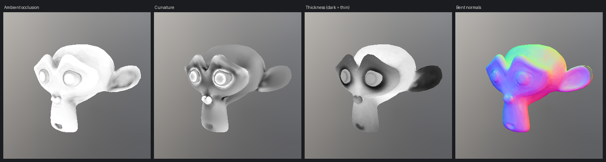
| Map | What it holds | Used by |
|---|---|---|
| Ambient occlusion | How much surrounding light reaches each point: dark in corners and crevices. AO samples trades quality for time: 64 is fast, 256 is smoother on complex models. Baked on the GPU. | Occlusion and Cavity smart masks; exported as AO. |
| Bent normals | The average direction light arrives from at each point (object space), baked together with the AO. | Exported for engines that use them for specular occlusion and better ambient lighting. |
| Curvature | Gray on flat areas, brighter on convex edges, darker in creases. | Edges and Cavity smart masks. |
| Thickness | How thick the model is behind each point: white is thick, dark is thin. Rays are cast into the model from every texel. Rays trades quality for time (32 is a good default). Baked on the CPU with every core; a few seconds at 2K. | The Thin parts smart mask; exported as a thickness map for subsurface scattering and translucency. |
Curvature is measured on the surface at a fixed size (3% of the model's radius), with short rays on both sides of the surface. That makes it independent of how the model is tessellated: a low-poly box gets clean, thin bright edges and flat faces stay neutral gray, while a smooth sphere is only slightly brighter than flat, so an edge mask doesn't cover it. Smoothly curved shapes (a dense, organic sculpt) add their own gentle curvature on top. When a high-poly normal map is baked, the curvature also picks up the normal map's own detail: rivets, panel lines and dents in the sculpt get worn edges and dirty creases even though the low-poly mesh has none.
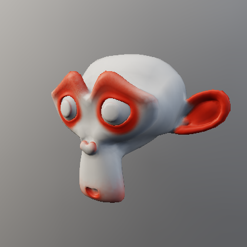
The thickness map, the bent normals and the curvature each have a view mode (Thickness (baked), Bent Normals (baked), Curvature) for checking them.
Thickness needs a closed model to be meaningful: on a single-sided plane, rays find nothing behind it and it reads as
thick everywhere. Lower thickness_distance in the bake_mesh_maps command (default: half the model's radius) to
look for thinness at a smaller scale.
Fixing a bake: baked map layers
A bake is not always right: too few AO samples leave it blotchy, a crease comes out too dark, a part that touches another picks up shadow it should not have. Every baked map has a layer of its own for that: ambient occlusion, curvature and thickness each get one in the Baked maps section under the layer stack when they are baked (and when you open a project from before 0.41). What the layer makes is the map the rest of Patina reads: smart masks, the 3D view and exported maps all use the fixed one. The layer adds nothing to the color, roughness or other channels.
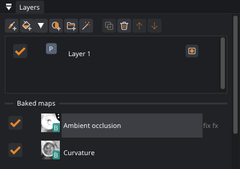
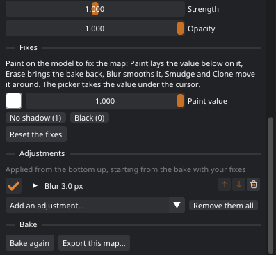
Select the layer and the 3D view shows its map (the view comes back when you select another layer). Then:
- Paint on the model to fix the map. The brush paints the Paint value in the layer's properties (for the AO, 1 is no shadow and 0 is fully shadowed; the curvature's flat is 0.5). The picker takes the value under the cursor.
- Erase brings the bake back under the brush. Reset the Fixes takes all of them away.
- Blur smooths the map, Smudge pushes it around and Clone copies a good part over a bad one. The polygon fill fills faces with the paint value.
- Adjustments work on the whole map: Levels, Blur, Fill, Noise and the other effects of a mask effect stack, starting from the bake with your fixes.
- Strength scales the map in the end: 0 turns it off, 1 is the map as it is, 2 doubles it (a darker AO). Opacity is how much of your fixes and adjustments applies.
- The layer's check switches the map off (0.44.2). The 3D view no longer shades the model with the ambient occlusion, and exports leave the map out. Smart masks keep using the map either way. (Before 0.44.2 the check only took your fixes away, so a bad bake kept showing.)
Baked for other UVs. When you edit the UVs after a bake (unwrap, make islands, move or rotate them, a mesh from Blender with new UVs), the maps move along with the paint. Where islands changed, that blurs them and can leave dark patches and blocks in the 3D view. The Baked maps section then says Baked for other UVs, with a Re-bake button: it bakes those maps again for the UVs as they are, and your fixes stay (0.44.2). Projects saved before 0.44.2 don't know what their bakes were made for: if you see dark patches that the base color doesn't have, bake again with Bake › All Mesh Maps.
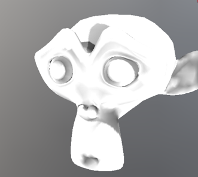
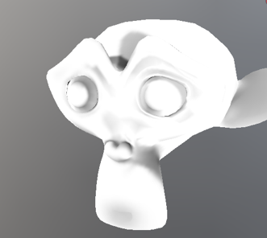
Baking the map again (Bake Again in the layer's properties, or the Bake menu) keeps your fixes and adjustments
on top of the new bake. Deleting the layer drops them and uses the bake as it is; Add a layer for… under the
section (or Baked Map Layer in the Add menu) gives the map a new one. Export this map… writes the fixed map
as a grayscale PNG. Agents use baked_maps (see Commands). The feature can be
switched off in Preferences › Features.
Baking from a high-poly mesh
A game model is usually a light, low-poly mesh with the detail of a heavy sculpt baked into its textures.
Bake › From a High-poly Mesh… (or Bake from high-poly… in the Texture Set panel) does that: choose the
sculpt (.glb, .gltf, .fbx, .obj, .stl or .3mf) and press Bake.
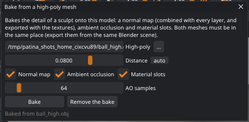
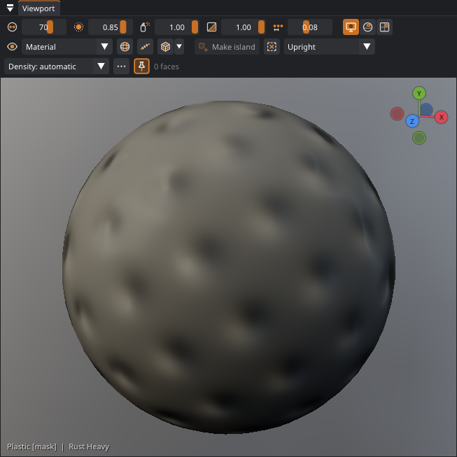
| Option | What it does |
|---|---|
| Normal map | The sculpt's surface direction for every texel. It is combined with the normals of every layer (so fill layers don't hide it), shown in the viewport and exported with the textures. |
| Ambient occlusion | AO of the sculpt's surface instead of the low-poly one. Smart masks use it too. |
| Curvature (automatic) | When the normal map is baked, the curvature is baked again with the normal map's detail added, so edge and cavity masks follow the sculpt's detail. |
| Material slots | The material slots of the sculpt, for the Material slot mask and the fill tool. |
| Points per texel | Each texel is measured at this many points spread over it (1, 4, 9 or 16), and what they find is averaged. More points give smoother edges to the detail, without stair steps. 4 is the default. |
| Distance | How far along the low-poly's normals, both ways, Patina looks for the sculpt. Each point takes the nearest surface it finds that way, and prefers one that faces the same way as the low-poly. When the rays find nothing, it takes the nearest point of the sculpt. By default the distance is measured: 1.5 times the gap between the two meshes at almost every point. Set the distance by hand to choose it yourself. Raise it when the result has flat patches, lower it when detail from a nearby part shows up in the wrong place. |
Both meshes must be in the same place and at the same scale: export them from the same Blender scene, with the same transform settings. The bake is stored in the project and is redone when you change the texture resolution. Paint, UV edits and the bake survive each other: when the UVs change, the baked maps move with them. Remove the bake goes back to the low-poly normals.
Baking down to a low-poly model
Painting the sculpt itself is often easier: the detail is all there, and smart masks find every crease. But a game needs the light model. Bake › Bake Down to a Low-Poly Model… moves every layer of the model you have open, the painted high-poly, onto its low-poly version, which then becomes the model. The low-poly can be a file (from Blender's retopology, or any other tool) or the quads of Patina's own retopology. The layer stack stays as it was: you go on painting, in layers, on the light model.
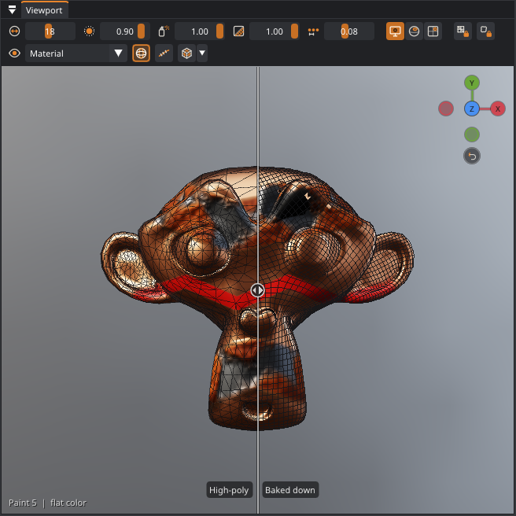
- Paint and masks, and the fixes painted over a baked map, are measured texel by texel. Each texel of the low-poly is sampled at several points spread over it (Points per texel: 9 by default). Each point looks along the low-poly's normal, both ways, for the high-poly's surface, as the high-poly bake does. What the points find there is averaged, weighted by how much paint covers it, so paint next to bare surface keeps its color.
- Painted normals (a normal stamp, a material with a normal map painted with the brush) are turned to fit the low-poly's surface, so the bumps point the same way in the world as they did on the high-poly.
- Fills, adjustments, folders and smart masks stay as they are. They are worked out on the low-poly, over its new bakes: the high-poly's shape goes into the low-poly's normal map, ambient occlusion and material slots (Bake the high-poly's shape into the normal map and AO), and curvature and thickness are baked again.
- Notes move onto the low-poly's surface.
The result is a new project: it has no file yet, and it is not linked to Blender. The high-poly's project stays as it was saved. If it has unsaved changes, Patina asks first. The high-poly stays with the new project as its high-poly model, so a resolution change or new UVs bake its shape again. The undo history starts afresh.
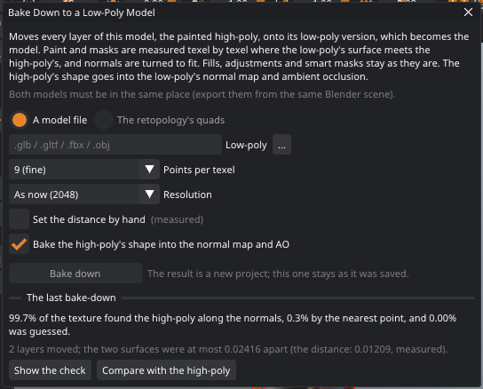
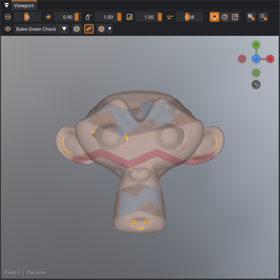
| Option | What it does |
|---|---|
| A model file / The retopology's quads | The low-poly: a .glb, .gltf,
.fbx, .obj, .ply, .stl or .3mf file in the same place
as the high-poly, or the quads you made in Retopology. A low-poly without UVs gets new ones. |
| Points per texel | 1 (fastest), 4, 9 (fine) or 16 (finest). More points are smoother along the edges of paint and in fine detail, and take longer. Above a 4K texture, at most 4. |
| Resolution | The low-poly's textures, per texture set or UDIM tile. As now keeps the high-poly's. |
| Set the distance by hand | As for the high-poly bake: off, it is measured from the two models. |
| Bake the high-poly's shape… | On, the sculpted detail becomes the low-poly's normal map, and its ambient occlusion and material slots are measured on the high-poly. Off, the low-poly has its own bakes. |
When it is done, the window says how much of the texture found the high-poly along the normals, how much only by the nearest point, and how much had to be guessed. Show the check (the Bake-Down Check view mode) marks those places on the model:
| Color | Means |
|---|---|
| Gray (the texture, faded) | The rays found the high-poly: the paint there is what the high-poly has. |
| Amber | Only the nearest point of the high-poly was found: close by, but not straight along the normal. |
| Red | Guessed from farther away: the low-poly has a part the high-poly doesn't, or the two are not in the same place there. |
| Magenta | The low-poly faces away from the high-poly there. It is turned inside out (flip it: Mesh › Mesh Check, or Blender's Recalculate Outside), or it folds over a hollow the high-poly has. It keeps its own shading there; a denser low-poly follows the hollow. |
Compare with the high-poly puts the high-poly, as it looked before the bake-down, left of the compare view's divider, and the low-poly right of it. Turn the wireframe on to see the two meshes. The check and the compare last until another model or project is opened.
Agents use bake_down (the low-poly's file) or retopo_use_as_model (the quads), then
set_view with bake_check and set_compare with high_poly (see
Commands). The Bake-down feature switch (Preferences › Features) turns it
off.
Material slots
Models from Blender often already have their parts separated by material slots (rubber, metal, glass…). Patina keeps them: the Material Slots view mode shows them in colors, the Fill tool's Material slot mode fills every face of the clicked slot, UV › Select › Whole Material Slot extends a face selection to its slots, and the Material slot smart mask turns a fill layer on for one slot only. When you bake from a high-poly mesh with Material slots on, the sculpt's slots are used.
Texture sets and UDIM tiles
Characters and props often give each part its own textures: the body, the clothes and the hair each laid out over the whole 0–1 square, or a hero asset spread over several UDIM tiles (1001, 1002, 1011…). Texture Set › Texture sets chooses how Patina stores the paint:
| Setting | What gets its own textures |
|---|---|
| One texture | Nothing: every face shares one set of maps (as before 0.9). |
| Per material slot | Each material slot, with its own 0–1 UV space. Slots may overlap in UV space. |
| UDIM tiles | Each UV tile the islands sit in: 1001 is 0–1, 1002 the square to its right, 1011 the one above. |
| Per slot and UDIM | Each UDIM tile of each material slot. |
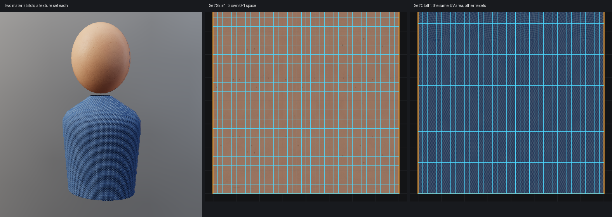
Patina picks the layout when it opens a model: per material slot when two slots cover the same part of the UV square, and UDIM tiles when the islands sit in several unit tiles. Islands in other tiles are no longer moved into 0–1 for UDIM models. You can switch at any time. The paint stays where it is on the model, but the undo history is cleared. When the slots overlap and you choose One texture, they share texels again, so their paint mixes.
A texture set of its own: the head and the body
To give part of the model its own texture, for example one for the head and one for the body, select its faces and choose UV › Texture Sets › New Texture Set from Selection. The same is in the UV editor's right-click menu, at the bottom of its list of sets, and under Texture Set › New set from selection.
- Select the faces. Select the head in the window picks everything above the neck in one click; otherwise use the Select tool in the viewport or click islands in the UV editor.
- Give the set a name, such as Head. The name of an existing set moves the faces into that set instead.
- Leave Pack each set to fill its space on: the new set's islands grow to fill its whole square (pinned islands move too and stay pinned), and the set the faces came from is packed again, unless it has pinned islands.
The faces go into a new material slot, and One texture becomes Per material slot. The paint moves with the faces, and the undo history is cleared. With the Blender link, the next Send Textures to Blender adds the slot to the object in Blender and assigns the faces to it (add-on 0.6.1 or later), so the head gets its own material there too. With UDIM tiles, the faces' islands move to the next free tile instead. Move selection to in the UV editor's right-click menu moves faces into a set that already exists.
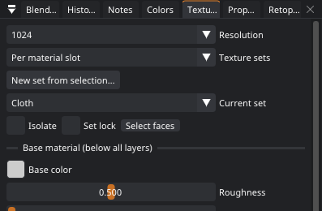
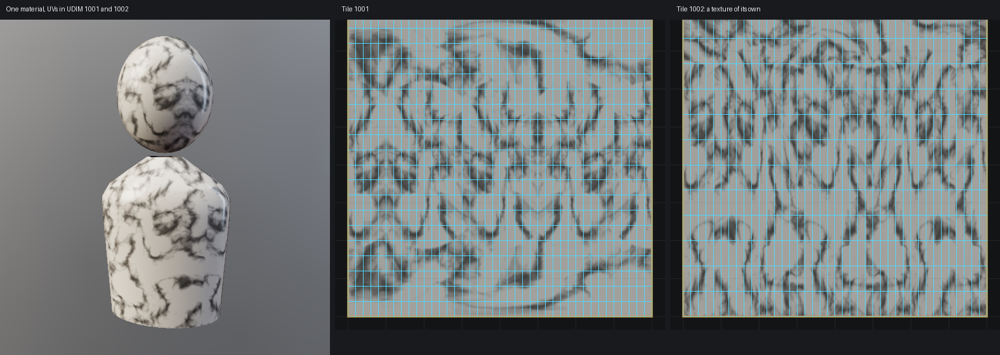
- Resolution is per tile. At 2048 every texture set or UDIM tile is 2048 × 2048. Patina keeps them together in one large texture, so memory grows with the number of tiles: 4 tiles at 2048 use as much as one 4096 texture. The limit is 64 tiles, and 16384 pixels across all of them together (16 tiles at 4096, or 64 at 2048).
- One layer stack paints them all. Strokes run across from one texture set to the next, and fill layers cover every set. To limit a layer to one set, give it the Material slot smart mask. To keep strokes on one set, use Set lock or Isolate.
- The UV editor shows one tile at a time. Pick it in the list at the left of its toolbar. Faces of other texture sets are hidden; neighboring UDIM tiles show around it in their place. Painting in the UV editor paints the tile you see.
- UV tools work per tile. Pack, Unwrap, the Island brush, Fix Overlaps and Move into Free Space keep every island in its own tile and pack each tile on its own, at the same texel density. Islands of different texture sets don't count as overlapping.
- Moving an island into a new UDIM tile adds that tile. The paint moves with it, and the undo history is cleared, because the texture is rebuilt.
- UV-mapped materials (fill layers with Mapping: UV) follow each tile's UVs, so a tiling texture lines up across UDIM tiles.
Exporting textures
Open the dialog with File › Export Textures… (Ctrl+E). Pick a folder, a preset, a size and how the files are named. Under the settings the dialog lists every file the export will write, as they are now: each file's name, what its channels hold (R occlusion, G roughness, B metallic), its bits (8 or 16), and whether it is a color map (sRGB) or a data map (Non-Color, as Blender calls it; an engine's "sRGB" off). With texture sets or UDIM tiles it lists one set's files and says how many sets there are. Files that are already there are replaced.
| Preset | Files (Name_…png) | Notes |
|---|---|---|
| Blender (Principled BSDF) | basecolor, roughness, metallic, normal, height (16-bit), emission, ao | Normal is OpenGL style. Connect it through a Normal Map node set to Tangent Space. |
| glTF (metallicRoughness) | baseColor, metallicRoughness (G = roughness, B = metallic), normal, emissive, occlusion | Ready for glTF / three.js / Babylon.js. |
| Unreal (ORM, DirectX normal) | BaseColor, OcclusionRoughnessMetallic, Normal (green flipped), Height, Emissive | Import the ORM texture with sRGB off. |
| Unity (MaskMap) | BaseMap, MaskMap (R metallic, G AO, B detail mask = 0, A smoothness), Normal, Height, Emission | For HDRP and URP Lit. Mark the normal as a Normal map in the importer. |
Opacity, sheen, clearcoat and subsurface (0.26) are exported only when the texture set uses them: the base
material sets them, a paint layer has painted them, or a fill layer's material has them. Blender gets
opacity, sheen, coat and subsurface maps (the live link connects them
to the Principled BSDF's Alpha, Sheen, Coat and Subsurface weights). glTF and Unity keep the opacity in the base
color's alpha channel, and get sheenColor, clearcoat and subsurface (glTF) or
Sheen, CoatMask and SubsurfaceMask (Unity). Unreal gets Opacity,
Sheen, ClearCoat and Subsurface. Layered PSD export adds a file for each of them
that is used.
With texture sets or UDIM tiles, every tile is exported on its own, at the chosen size. Unless the name template
says otherwise, the set's name comes before the map name and the UDIM number before the extension:
Hero_Body_basecolor.png, Hero_Clothes_basecolor.png, Hero_basecolor.1001.png,
Hero_basecolor.1002.png. In templates, $set is the material slot's name, $udim the
tile number and $tile both. Blender, Substance, Mari and Unreal read the UDIM numbers this way.
Size can be the texture set's own size or anything from 512 to 32768, without changing the project's resolution. Below the texture set's size the maps are scaled down. Above it, Patina renders the export in tiles: fill layers' materials and smart masks are rendered at the full export size, so they really have 16K or 32K detail, while painted layers and masks (which only exist at the texture set's resolution) are scaled up. The PNG files are written a band at a time, so a 32K export doesn't need the whole image in memory, but it does take a while and needs space on disk: a 32K base color PNG is often over a gigabyte.
The AO, Thickness and Bent normals boxes add those baked maps to the export (as
ao, thickness and bentNormal; Thickness and BentNormal for
Unreal and Unity). They are only available once baked. Bent normals are tangent space, OpenGL style, or DirectX style
for Unreal.
Layered PSD
Set Format to Layered PSD to hand the layer stack to Photoshop, Krita, GIMP or Affinity Photo instead of
flat maps. Patina writes one .psd file per map: base color, roughness, metallic, height (16-bit),
normal and emission. In each file:
- every Patina layer is a Photoshop layer with the same name, opacity, blend mode and visibility;
- its mask (painted, smart mask or effect stack, as Patina uses it) becomes a layer mask you can keep editing;
- folders become layer groups;
- a paint layer holds its paint, a fill layer its material over the whole canvas (the mask cuts it down, as in Patina), and an adjustment layer the result of the adjustment on the layers below, marked (adjustment, baked);
- the bottom layer, Base, holds the base material (and the high-poly normal map, if baked);
- the flattened image is Patina's own result, so programs that ignore layers still show the right texture.
PSD files are written at the texture set's size. With texture sets or UDIM tiles, each set
or tile gets its own PSD files, named like the PNG maps (Hero_Body_basecolor.psd,
Hero_basecolor.1002.psd). The normal file uses the preset's convention (DirectX for Unreal).
Blend modes Photoshop doesn't have are mapped to the closest one: add signed becomes linear light. Normal maps
don't blend like colors, so for the normal file treat the layers as a reference and use the flattened image.
File names
File names is a template. The default $mesh_$map gives Suzanne_basecolor.png. The
dialog shows an example name as you type.
| Token | Becomes |
|---|---|
$mesh | The $mesh field, or the mesh name when that is empty |
$project | The project file name without .patina (untitled if not saved yet) |
$map | The map name of the preset, for example basecolor, ORM… or mask |
$size | The output size in pixels, for example 2048 |
$preset | blender, gltf, unreal or unity |
$layer | The exported layer's name, or all |
For example, T_$mesh_$map_$size gives T_Suzanne_BaseColor_2048.png, a common Unreal naming
style. Characters that are not allowed in file names are replaced with _. Templates cannot create folders.
Exporting one layer or a mask
The Export combo chooses what to write:
- All layers: the finished textures.
- Only the selected layer: the maps as they look with that layer or folder soloed, over the base material. Use it to hand a decal layer or a dirt pass to another tool.
- The selected layer's mask: the painted mask as a grayscale PNG (
$mapismask), at the chosen size.
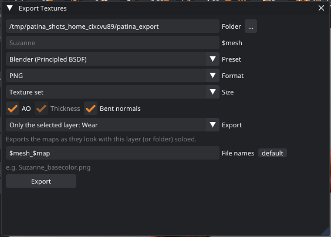
Right-click a layer ▸ Export this layer… or Export its mask… opens the dialog set up for it. If an export fails (for example, the folder is read-only or the disk is full), Patina shows an error dialog, and nothing that was there before is half-overwritten. Each file is written to a temporary name first and then renamed.
Export again (File › Export Again, Ctrl+Shift+E) repeats the last export with the same folder, preset, size and names, without the dialog. The settings are stored in the project, so it works after reopening it too.
When you work with the Blender bridge, Ctrl+B exports straight into the linked Blender material instead, as described in Blender bridge.
Projects
File › Save (Ctrl+S) writes a single .patina file. It holds the mesh, UVs,
seams, every layer and mask, the bakes and the settings, so you can move it to another computer and carry on. Projects
open the same way on Linux and Windows.
While the window is open, Patina autosaves every 5 minutes after you stop painting (Preferences › Saving changes how often, or turns it off). The autosave is written in the background, so painting carries on while it saves. It goes to the cache folder (see where files live), and File › Open Autosave recovers it. Autosaving never changes the path your project is saved to.
- Save Incremental (File › Save Incremental, Ctrl+Alt+S) saves a new
numbered version next to the current one:
crate.patina→crate_v002.patina→crate_v003.patina, never overwriting an older version. - Crash recovery: if Patina didn't close properly, the next start offers to restore the autosave. Several Patina windows can be open at once without setting this off.
- The mesh changed on disk: when the
.glbor.objyou opened is saved again by another program (you edited it in Blender and exported over it), Patina offers to update the mesh. Your layers are kept: paint follows changed UVs, and is carried over through 3D when the topology changed. Always update (or File › Reload Automatically When the Mesh Changes) skips the question. File › Reload Mesh (Keep Layers) does it by hand.